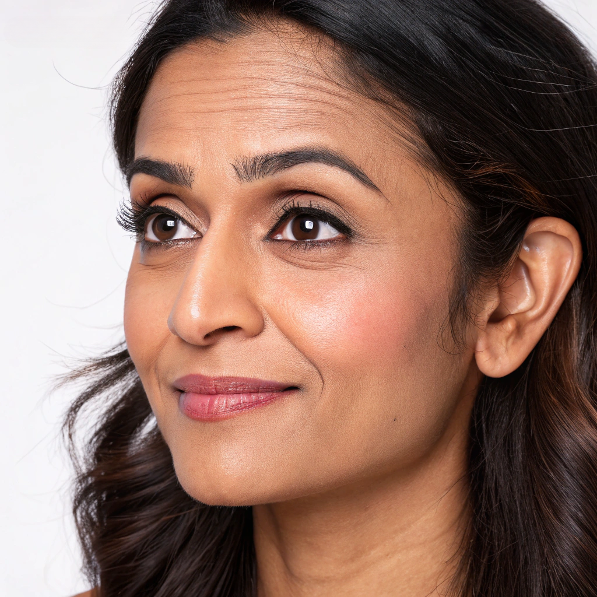

Welcome to Pune's leading aesthetic clinic specializing in premium Botox and Fillers treatments. We combine advanced techniques with personalized care to help you achieve natural-looking results that enhance your beauty and boost your confidence. Our expert practitioners bring years of experience in providing safe, effective aesthetic solutions tailored to your unique facial structure and desired outcomes.
BEFORE
AFTER
Botox works by temporarily relaxing the facial muscles that cause wrinkles and fine lines. The treatment blocks nerve signals to these muscles, smoothing the appearance of:
Fillers are gel-like substances that restore lost volume, smooth lines, and enhance facial contours. They can effectively:
Your journey begins with a comprehensive consultation where we assess your facial structure, discuss your aesthetic goals, and recommend the most suitable treatment options.
Based on your consultation, we create a customized treatment plan targeting specific areas while ensuring natural-looking results.
We provide detailed aftercare instructions to maximize your results and minimize any potential side effects.
We offer competitive pricing for premium Botox and Fillers treatments in Pune. Our transparent pricing structure is based on:
We believe in providing value through quality treatments rather than compromising on products or expertise. Consultations are complimentary for all new clients.
Botox results typically last 3-4 months. Individual results may vary based on metabolism, treated area, and dosage. Regular maintenance treatments can help prolong and enhance results over time.
No, dermal fillers are not permanent. Depending on the type used, fillers typically last between 6-18 months. Hyaluronic acid fillers can be dissolved if needed, offering flexibility and reversibility.
Most patients experience minimal to no downtime after Botox or filler treatments. You may notice slight redness, swelling, or bruising at injection sites, but these typically resolve within hours to days. Most patients return to normal activities immediately.
Discomfort is typically minimal. We use ultra-fine needles and may apply topical numbing cream before treatment. Many fillers contain lidocaine to minimize pain during injection. Most patients describe the sensation as a slight pinch that subsides quickly.
In Pune, qualified practitioners include dermatologists, plastic surgeons, and specifically trained aesthetic physicians. Always verify credentials and experience before treatment. Our clinic employs only certified medical professionals with extensive training in facial aesthetics.
Experience The Difference That Premium Botox And Fillers Treatments Can Make. Contact Us Today To Schedule Your Complimentary Consultation And Take The First Step Toward A More Confident You.
Book Now